来源：https://ia0969wpr2.feishu.cn/docx/T0Q9dSNzsoIFQRx15O5cjAsdnYb
工作流详情：
第一步：启动RPA根据关键词采集笔记信息
首先，我们需要输入想要分析的关键词，例如“美妆”或“旅游”。然后自动拓展平台上的一级/二级关联词，不放过任何一个潜在的流量词。采集所有关键词与联想词相关的笔记。
第二步：筛选异常值
我们将点赞数或互动量远高于平均水平的笔记或作品定义为异常值。根据GPT-4的建议，我们使用RPA+IQR和CES计算的方法对采集到的数据进行异常值判断，采集完成数据后会根据设定的阈值自动标记这些异常值作品，方便我们后面评论采集与深入分析。
第三步：评论分析与选题建议
用户的声音和反馈相当重要，其中蕴藏着大量的用户数据和真实想法。这些平台的爆款内容往往能够反映出用户的真实诉求和生活状态。因此,通过采集和分析这些平台的数据,我们可以洞察用户需求,挖掘市场机会。通过数据采集和AI分析，洞悉用户需求。
我们继续使用影刀采集异常值笔记的文案和评论数据，并导入 Claude opus 或 Gemini 1.5 等大模型进行分析。通过情感分析和主题提取，我们可以深入了解用户的真实想法和关注点，并获得AI选题建议，为内容创作提供灵感。
下面将详细介绍如何利用影刀RPA自动化工具，实现小红书和抖音平台的数据采集和评论分析，并以“备孕”为关键词分享整个过程与主要实现源码
小红书数据采集分为PC端和APP端两种方式。
备孕男生注意事项、备孕攻略、备孕期间吃什么、备孕男士吃什么、备孕需要准备什么、备孕检查去什么医院什么科、备孕多久怀孕正常、备孕叶酸推荐哪个品牌、备孕多久后可以去洗、备孕期间注意事项
二级联想词大概二百多个，采集后如下：
备孕app、备孕app推荐哪个好、备孕a醇、备孕app推荐排行、备孕aa后多久能去厕所、备孕app那个测排卵日最准、备孕艾灸注意事项、备孕阿司匹林怎么吃、备孕安排完多久可以去厕所、备孕安排后要一直躺着、备孕b超检查、备孕博主、备孕b超、备孕b超检查什么时间比较好、备孕补剂、备孕拔智齿有必要吗、备孕补钙、备孕半年了还没怀上、备孕补锌、备孕补充什么营养品、备孕吃什么叶酸好、备孕ct、备孕餐、备孕餐谱、备孕吃什么水果、备孕吃什么菜好、备孕菜谱、备孕吃的复合维生素、备孕吃维生素c、备孕吃什么好、备孕豆浆喝法、备孕多久怀孕正常、备孕dha、备孕多久后可以去洗、备孕d3、备孕多久、备孕多久安排一次成功大、备孕多久戒烟、备孕多喝什么水、备孕多久合适、备孕阿胶、备孕二甲双胍、备孕二手烟危害、备孕二胎、备孕二胎需要做哪些准备、备孕阿胶怎么吃、备孕二手烟环境怎么办、备孕儿子的秘诀技巧吃什么、备孕二胎女宝、备孕儿子喝什么牌子苏打水、备孕发烧了咋办、备孕辅酶q10哪个牌子好、备孕发烧、备孕辅酶q10吃多少mg、备孕复合维生素、备孕辅酶q10怎么吃、备孕辅酶q10推荐什么牌子好、备孕防晒、备孕发烧可以吃退烧药吗、备孕发烧了吃什么退烧药、备孕感冒吃什么药、备孕攻略、备孕挂什么科室、备孕感冒了怎么处理、备孕攻略新手、备孕钙片推荐女生、备孕感冒、备孕挂什么科孕前检查、备孕攻略女孩、备孕攻略男士、备孕喝咖啡、备孕喝啤酒、备孕喝什么养生茶、备孕喝豆浆的正确方法、备孕喝酒、备孕喝什么好、备孕护肤品有什么要注意、备孕和不备孕的区别、备孕喝豆浆、备孕喝什么牛奶、iwatch备孕app、风疹病毒抗体igg阳性什么意思备孕、抗心磷脂抗体igg偏高对备孕有影响吗、iga备孕、巨细胞病毒抗体igg高影响备孕吗、再次踏上我的三宝备孕之路id、iwatch备孕、再次踏上我的三宝备孕之路id罗、备孕检查去什么医院什么科、备孕几天同一次发、备孕忌口、备孕检查男性、备孕戒烟需要多久、备孕检查前注意事项、备孕基因筛查有必要吗、备孕检查挂什么科女、备孕检查必做项目女、备孕戒酒多久、备孕可以喝酒吗、备孕可以喝咖啡吗男生、备孕可以喝咖啡吗女生、备孕可以吃布洛芬止痛吗、备孕可以按摩身体嘛、备孕可以喝的养生茶、备孕可以美甲吗、备孕看什么书、备孕可以染头发吗、备孕可以染发吗、备孕龙宝宝时间表农历、备孕龙宝、备孕礼物闺蜜、备孕拉肚子吃什么药、备孕礼物、备孕龙宝宝还来得及吗、备孕龙年宝宝、备孕氯雷他定、备孕流程详细、备孕老公不戒烟酒、备孕米诺地尔、备孕美甲、备孕马宝宝、备孕美甲可以做吗、备孕门诊、备孕没怀上需要检查什么、备孕马宝宝怀孕时间对照表、备孕每天还是隔天、备孕每日食谱、备孕梦见蛇是什么意思、备孕男士吃什么、备孕能喝咖啡不、备孕女生注意事项、备孕男生注意事项、备孕能喝酒吗、备孕女士吃什么、备孕能染头发吗、备孕男士需要吃叶酸吗、备孕男、备孕男方注意事项、备孕偶尔喝一次酒可以吗、备孕偶尔抽一次烟影响吗、备孕偶尔喝一次白酒影响吗、女生备孕期间能偶尔喝酒吗、备孕期间偶尔喝酒有影响么、备孕期女方偶尔喝酒可以吗、备孕plog、偶尔喝酒影响备孕吗、偶尔喝一次酒影响备孕吗、olly女士复合维生素备孕可以吃吗、备孕泡温泉、备孕排卵安排、备孕排卵日、备孕爬楼梯、备孕拍ct、备孕排卵期要每天安排吗、备孕皮夹克、备孕拍了x光片、备孕泡脚有讲究吗、备孕泡脚包推荐助孕、备孕前需要检查什么项目、备孕q10辅酶、备孕q10辅酶哪个牌子好、备孕前的准备、备孕群聊、备孕期间男士可以喝酒吗、备孕期间吃什么、备孕去医院检查什么项目、备孕期间抽烟会影响胎儿吗、备孕q10、备孕染发、备孕染发有影响吗、备孕软件app哪个好用、备孕日期、备孕润化剂、备孕日常分享、备孕如何调理身体、备孕如何减肥、备孕如何安排、备孕日历表、备孕蛇宝宝、备孕蛇宝宝时间表、备孕什么意思、备孕食谱家常菜、备孕书籍推荐必看、备孕水果、备孕时总是流出来、备孕苏打水、备孕食补、备孕食谱女、备孕跳绳、备孕同方后注意事项、备孕烫发有影响吗、备孕褪黑素、备孕跳绳一天跳多少个、备孕跳绳正确方法、备孕同方后可以洗吗、备孕调理北京中医院哪个好、备孕汤、备孕推荐书籍、备孕可以用ulike脱毛仪吗、解脲支原体uu阳性影响备孕吗、乙肝疫苗60ug打了后多久可以备孕、uu解脲支原体阳性无症状可以备孕吗、usana备孕、备孕要提前多久、备孕vlog、备孕vd、备孕ve、备孕ve怎么吃、备孕vd推荐哪个牌子、备孕vc、备孕vd多少合适、备孕vc片推荐哪个牌子、备孕vikpro辅酶q10、备孕维生素d、备孕维生素怎么吃、备孕晚餐吃什么、备孕维d、备孕晚上吃什么、备孕维生素e推荐、备孕维生素c、备孕维生素b族推荐、备孕晚饭吃什么、备孕温度曲线图、备孕x光、备孕险、备孕需要准备什么、备孕星座、备孕需要戒烟戒酒吗、备孕需要注意些什么、备孕性激素六项、备孕心态很差怎么办、备孕需要吃什么保健品、备孕需要吃叶酸片吗、备孕叶酸推荐哪个品牌、备孕一定要守口如瓶、备孕叶酸怎么吃、备孕瑜伽、备孕鱼油、备孕一年多也没怀怎么办、备孕要戒烟吗、备孕叶酸提前多久吃、备孕运动女、备孕怎么提高成功率、备孕资势前位、备孕注意事项及禁忌、备孕早餐、备孕做完后躺多久、备孕恣势男、备孕做完后能洗吗、备孕智齿一定要拔吗、备孕最佳受孕时间、备孕枕头
可以看到二级联想词更多，几乎涵盖了原始关键词下的所有热门拓展搜索，我们以这些词重新进行笔记采集
PC端小红书的影刀采集流程和主要源码如下：
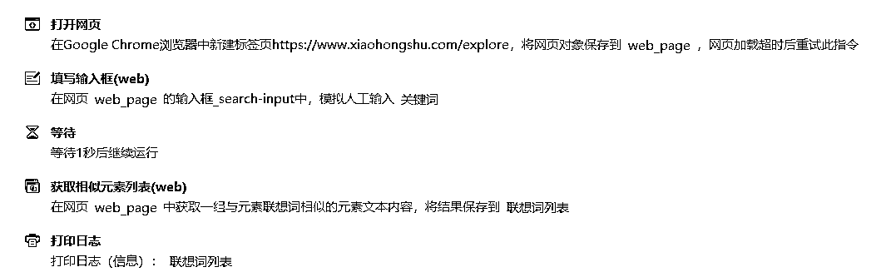
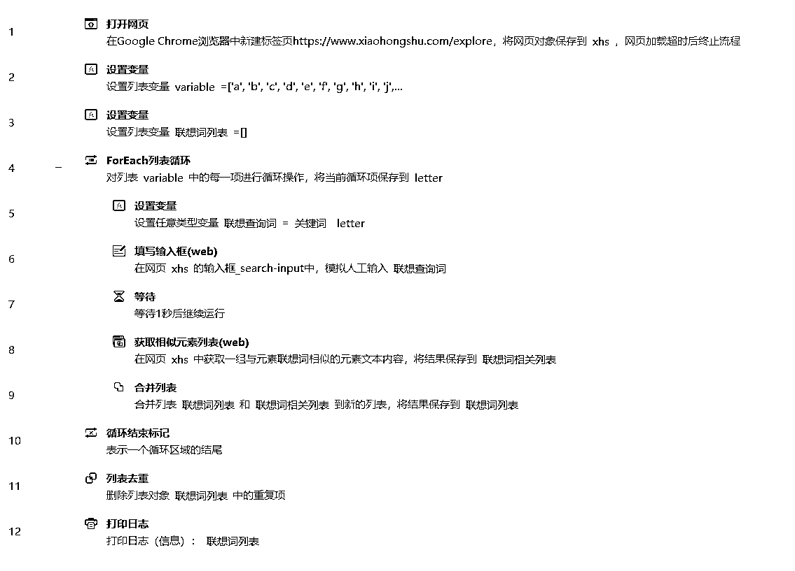
根据设置RPA会选择一级/二级联想词进行笔记采集
二级联想词有二百多个，我们先以一级联想词为例，执行完成后可以看到我们已经采集了该关键词下的1000多条笔记，并且影刀通过IQR的方式对所有异常笔记进行筛选，并且导出了一个新的只有异常笔记的Excel：小红书笔记采集_备孕_异常笔记.xlsx。我们可以继续采集这部分异常笔记的评论信息并进行分析。当然，我们也可以完全自动化，采集完成异常笔记之后直接进行评论采集与大模型分析，这样适合在无人值守的情况下进行批量采集。如果需要对采集评论的笔记进行筛选的话可以使用半自动的方式。
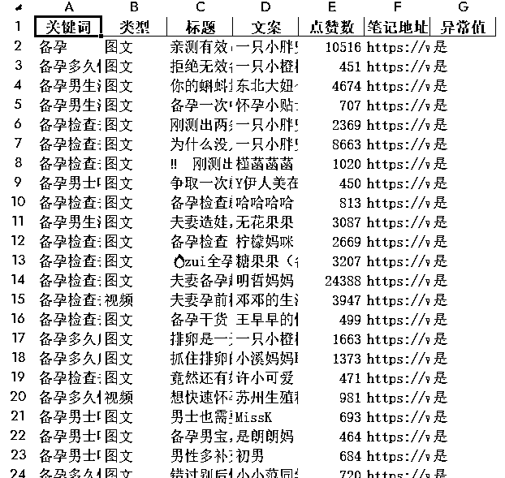
用户的声音和反馈相当重要，其中蕴藏着大量的用户数据和真实想法。这些平台的爆款内容往往能够反映出用户的真实诉求和生活状态。因此，通过采集和分析这些平台的数据，我们可以洞察用户需求,挖掘市场机会。
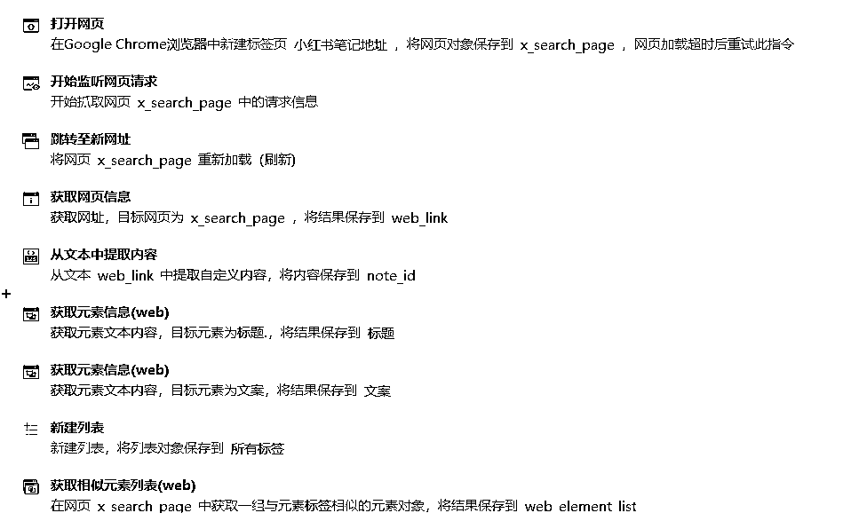
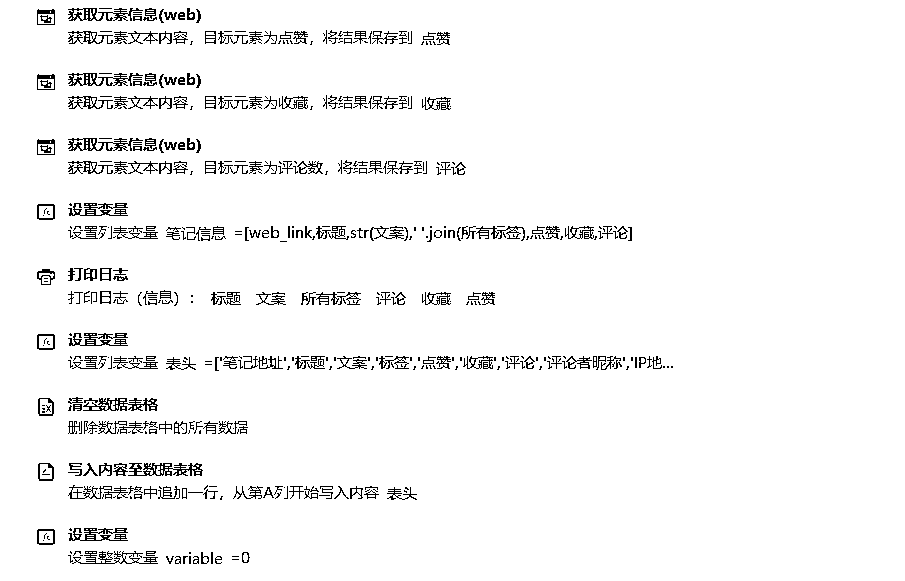
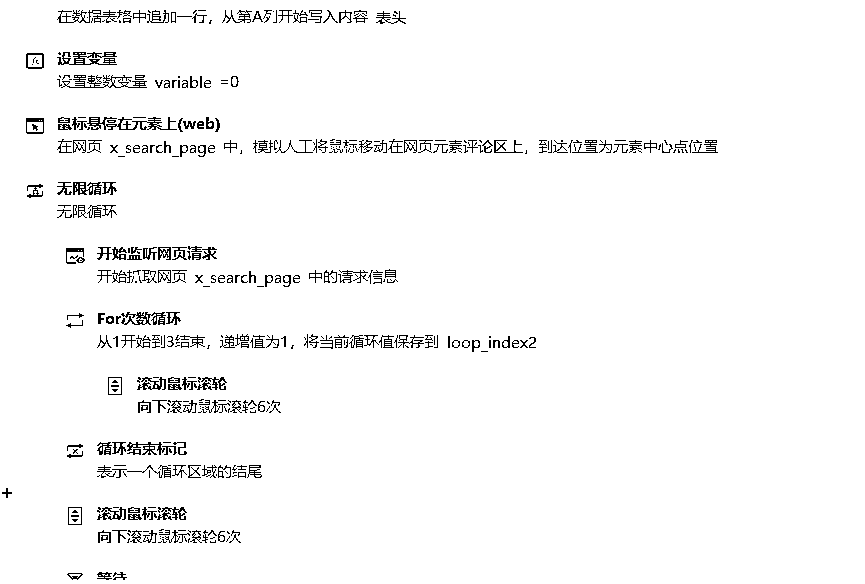
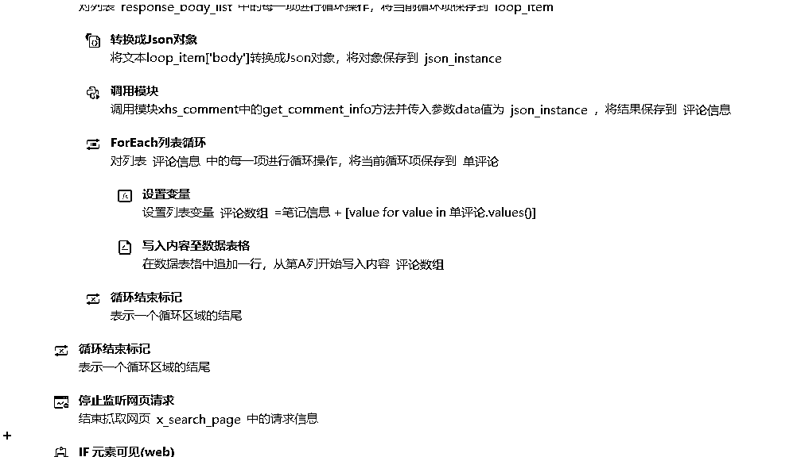
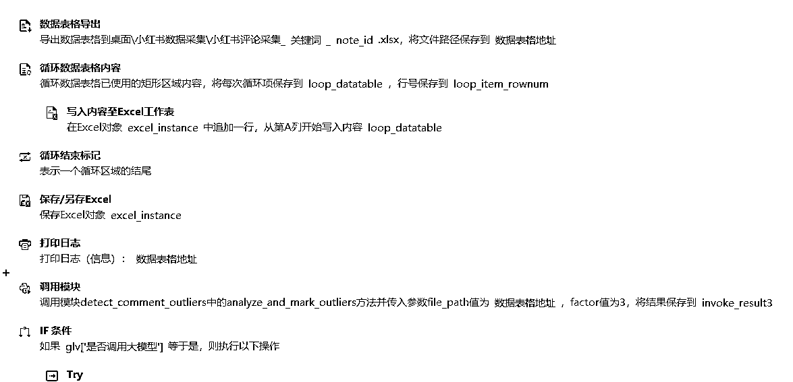
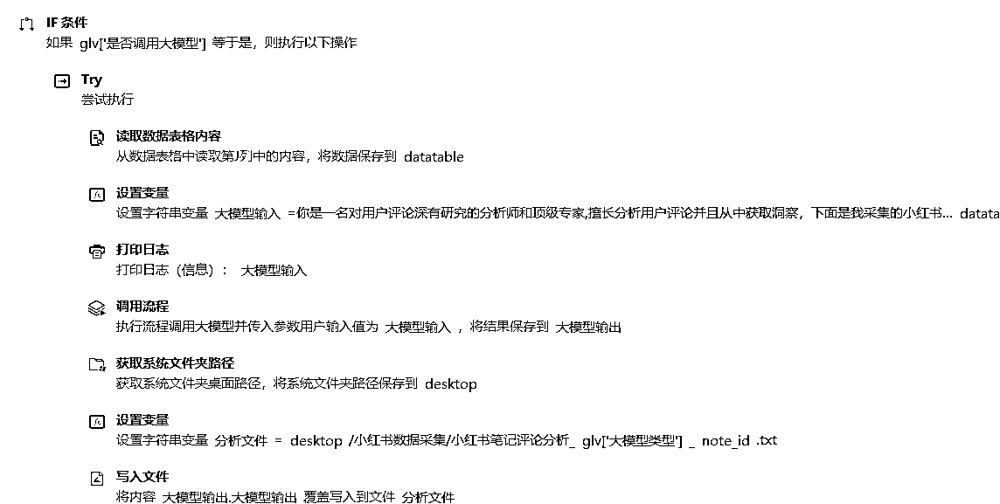
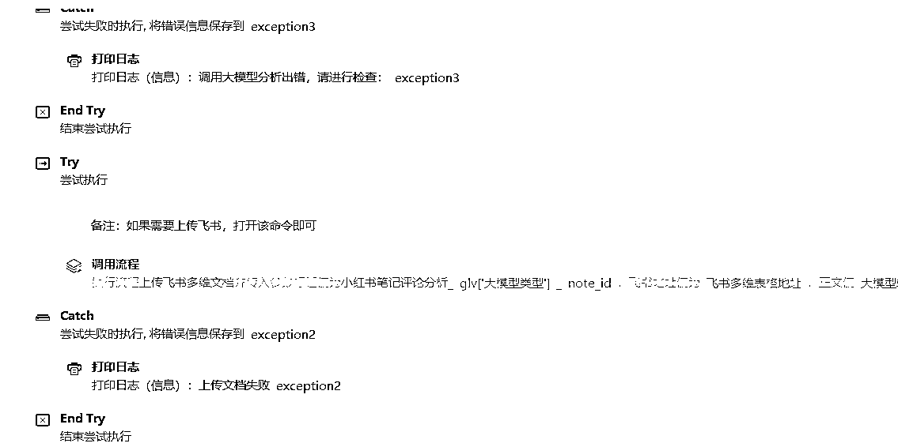
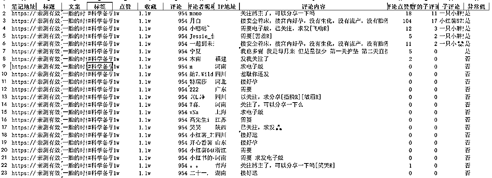
这部分是自动进行的，开始采集前如果我们勾选了评论采集，我们继续使用影刀采集异常值笔记的文案、点赞评藏、所有评论数据进行采集。采集后的评论如下，包括笔记的文案、标签、点赞评藏、评论详情等
如果我们勾选了大模型分析之后会导入 Claude opus 或 Kimi 等大模型根据提示词进行分析。我们可以深入了解用户的真实想法和关注点，并获得AI选题建议，为内容创作提供灵感。如下，机器人会把大模型分析后的结论保存到桌面文件。报告内容提示词可以自行进行修改
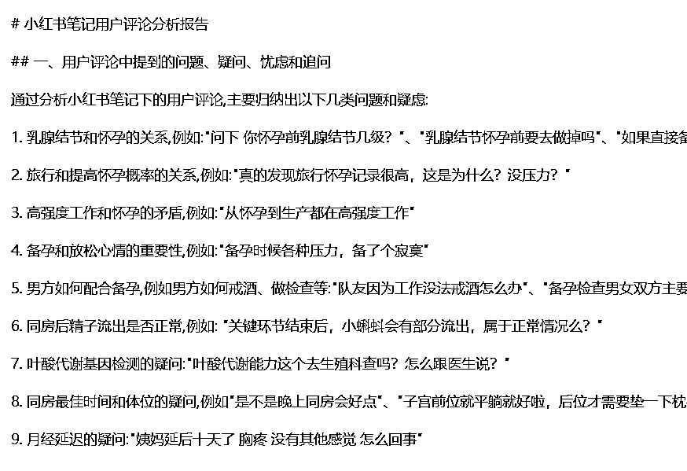
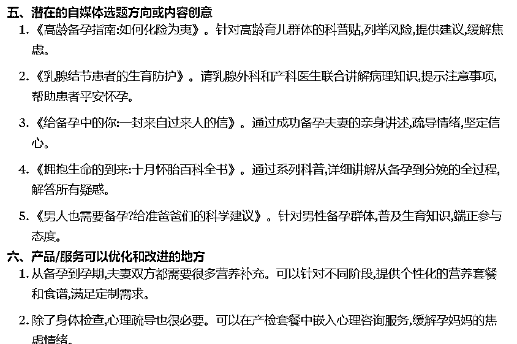
最后感谢大家阅读到了这里，通过数据采集和AI分析，我们可以更好地了解用户需求和喜好，从而优化内容创作和营销策略。无论是小红书、抖音，还是其他平台，都可以应用类似的方法进行数据挖掘，获取有价值的用户信息。在信息时代，善于结合AI进行数据驱动的分析和内容创作或许是突围的关键。这套工作流,希望能给大家提供的一个思路。